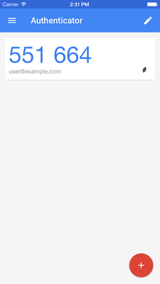

<div class="login-page" [@routerTransition]>
  <div class="row justify-content-md-center">
    <div class="col-md-6">
      
      <h4>BMO Dataviewer - Account setup</h4>
      <form role="form" *ngIf="!noUser&&!showAfterscreen">
        <div class="form-content" style="padding-top: 20px;">
          Hello {{user}}, help us set up your account
          <ngb-alert *ngIf="alert.active" [type]="alert.type" (close)="alert.active=false">
          {{ alert.text }}
          </ngb-alert>
          <div class="form-group">
            <input type="password" class="form-control input-underline input-lg" name="passwordField" id="passwordField"
              [(ngModel)]="passwords.password" placeholder="Password (at least 7 characters)">
          </div>
          <div class="form-group">
            <input type="password" class="form-control input-underline input-lg" name="confirmPasswordField"
              id="confirmPasswordField" [(ngModel)]="passwords.confirmPassword" placeholder="Repeat Password">
          </div>
          <p *ngIf="initiate2fa">Please take a moment to set up two factor authentication. <b><a
                (click)="openModal(content)" href="javascript:void(0)"> Click here to learn how.</a></b> <br>
            <i>This helps us confirm your identity and secure your account</i></p>

          <p *ngIf="!initiate2fa">It seems you already implemented 2fa. <br>
            If for some reason you are not able to access your 2fa device contact BMO to reset your two factor
            authentication.</p>
          <ng-template #content let-modal>
            <div class="modal-header">
              <h4 class="modal-title">Two factor authentication information</h4>
              <button type="button" class="close" aria-label="Close" (click)="closeModal()">
                <span aria-hidden="true">&times;</span>
              </button>
            </div>
            <div class="modal-body">
              <form>
                <div class="form-content">
                  <h5 style="color:fuchsia">Two factor authentication adds <b>an extra layer of security</b> to your
                    account by asking for a verification code when you sign in.</h5>
                  <b>To activate Two Factor Authentication:</b>
                  <ul>
                    <li>Install an authenticator app on your phone using the following steps.
                      <ul>
                        <li>Search for Google Authenticator on the Apple App Store or Android Play Store</li>
                        <li>Install the Google Authenticator</li>
                        <li>After installing, open the Google Authenticator app</li>
                        <li>The app should look like this:<br> </li>
                        <li>Click on the red circle with the white plus in it</li>
                        <li>Select the "Scan a barcode" function</li>
                        <li>Scan this QR code or the one on the create password page.</li>
                      </ul>
                    </li>
                    <div *ngIf="initiate2fa">
                      <ngx-qrcode [value]="QRCode" cssclass="aclass" errorCorrectionLevel="L">
                      </ngx-qrcode>
                    </div>
                    <li>Your Authenticator app returns a six digit code</li>
                    <li>Enter the code when asked for a "Authenticator pass-code"</li>
                    <li>That's it. You have successfully set up Two Factor Authentication!</li>
                    <li>For a video showing the installation process <a
                        href="https://www.youtube.com/watch?v=2CIKrK-Zf60">click here</a>
                  </ul>

                  If you want more information about two factor authentication <a
                    href="https://en.wikipedia.org/wiki/Multi-factor_authentication"> click here</a> or contact
                  BMO-Offshore if you have any issues.

                </div>
              </form>
            </div>
            <div class="modal-footer">
              <button type="button" class="btn btn-primary" (click)="closeModal()">Close window</button>
            </div>
          </ng-template>

          <div class="aclass" *ngIf="initiate2fa">
            <ngx-qrcode id="QRCodeMain" [value]="QRCode" cssclass="aclass" errorCorrectionLevel="L">
            </ngx-qrcode>
          </div>
          <div class="form-group">
            <input type="text" class="form-control input-underline input-lg" maxlength="6" name="confirm2fa"
              id="confirm2fa" [(ngModel)]="passwords.confirm2fa" placeholder="Authenticator pass-code">
          </div>
        </div>
        <a class="btn rounded-btn" (click)="setUserPassword()"> Submit </a>
      </form>
      <div *ngIf="noUser">
        The requested page is not available.
      </div>
      <div *ngIf="showAfterscreen">Successfully set your password, you will be redirected to our login page soon.</div>
    </div>
  </div>
</div>